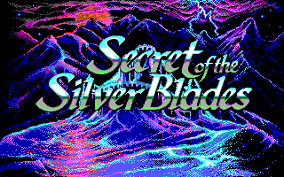
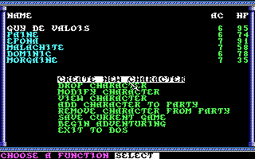
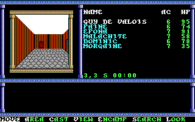
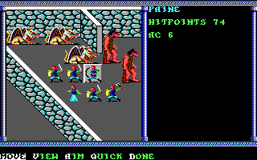

名稱：銀色匕首之謎／銀刃之秘 (Secret of the Silver Blades，英文版)
簡介：SSI 1990年出品的角色扮演遊戲，為光芒之池系列的第三部，台灣由智冠代理進口。
遊戲以直角3D畫面呈現，戰鬥時則以3D斜角畫面呈現，採策略團體回合制方式進行 [待補]。




備註：本版為1992年1.3版
保護：手冊單字，破解碼：
GAME.OVR
80 7E FC 03 74 16 8D BE F8 FD 16
-- -- -- -- EB -- -- -- -- -- --
75 06 C6 46 FF 01 EB 04 C6 46 FF 00 C6
90 90 -- -- -- -- -- -- -- -- -- -- --
檔案：secret10.rar = 1.0版（智冠版）